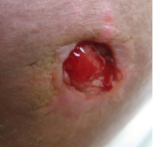
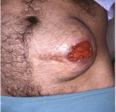
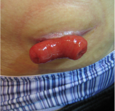
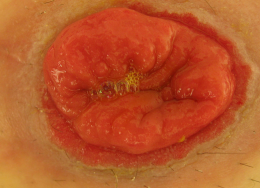
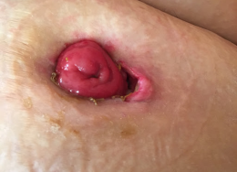

Complicações das Estomas Intestinais de Eliminação (Imagens fortes)
3min de leitura
Há complicações que são mais comuns para a Ileostomia, já que é preciso entender que o no intestino delgado ocorre uma menor absorção de fluidos e eletrólitos e o ph é muito alcalino, ou seja, torna a excreção da ileostomia em consistência mais líquida, (eliminação de 500 a 800 ml/dia), com eliminação de grande quantidade de enzimas e irritativa à pele. Portanto, a dermatite e o desequilíbrio eletrolítico são usualmente relacionados a esse tipo de estomias.
Entretanto, quando relacionado ao estoma, há possiveis problemas que são comuns Ileostomia e a Colostomia e são classificadas em: Imediatas, Tardias e Precoces.
- Imediatas: Ocorrem nas primeiras 24 horas do pós-operatório.
Necrose

Hemorrgia

Edema

- Tardias: Ocorrem após a alta hospitalar.
Estenose
Hérnia Paraestomia
Prolapso
- Precoces: Ocorrem entre o primeiro e o sétimo dia de pós-operatório.
Retração e Dermatite
Descolamento Cutaneomucosa
